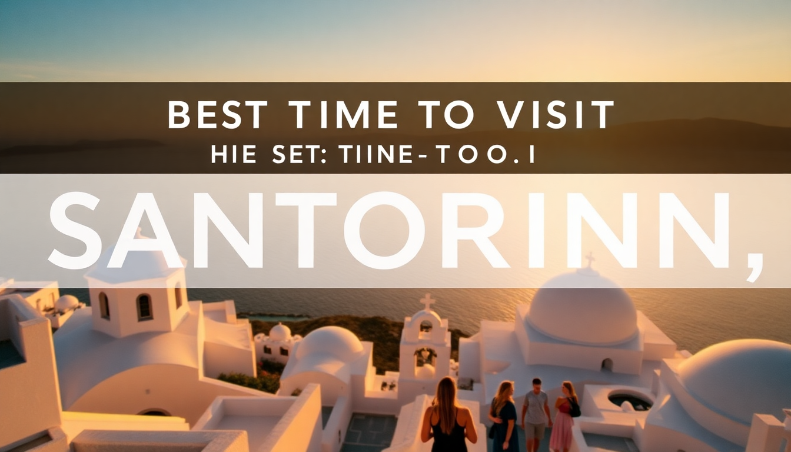

Best Time to Visit Santorini: A Month-by-Month Guide

If you’re trying to figure out when to go to Santorini without getting lost in generic “shoulder season” advice, I’ve got you. I’ve been there in August (sweaty, packed, still worth it) and in November (quiet, moody, half the restaurants closed). This guide walks you through each month so you can pick the window that matches your tolerance for crowds, your budget, and your idea of “good weather.”
When is the best time to visit Santorini for good weather?
The sweet spot is late April through June and September through mid-October. During those months, you get sunny skies, temperatures in the low 20s to mid-30s °C (70s–80s °F), and the Meltemi winds haven’t turned the ferry rides into a punishment. July and August are scorching—think 35°C with zero shade on the caldera paths—and the island is slammed. I walked from Fira to Oia in June once; by 11 a.m. I was already hunting for shade at every blue-domed church.
- April–June: Wildflowers, warm but not hot, fewer tourists. I loved hiking the Fira–Oia trail in early May—only a handful of other people on the path.
- September–October: Sea temperatures are still swimmable (around 24°C), and the sunset crowds in Oia thin out after mid-September.
- July–August: If you must go, book everything six months ahead. We stayed at Hotel Kastro in Oia one August; the view was postcard-perfect, but we queued 20 minutes for a table at Katikades for dinner.
What is Santorini like in winter (November–February)?
Honest take: it’s dead. Many hotels, restaurants, and tour operators shut down from November through March. I visited in late January once, and Fira felt like a ghost town—three tavernas open, one bakery, and a lot of wind. The upside? You’ll have the caldera viewpoints to yourself, and prices drop by 50–60%. The downside: ferry schedules get spotty, and the sun sets before 5:30 p.m.
- November: Last chance for decent weather. I ate at Metaxi Mas in Pyrgos (one of the few places still open) and had the terrace to myself.
- December–February: Expect rain, 10–15°C, and strong winds. The Akrotiri archaeological site is open year-round, and it’s a great indoor option—no crowds at all.
- January: Cheapest flights of the year. I booked a room at Astra Suites in Imerovigli for €80 a night (vs. €350 in July).
When is the cheapest time to visit Santorini?
You’ll pay the least from November through March, excluding Christmas and New Year’s week. Flights from Athens to Santorini via Sky Express or Aegean Airlines can dip to €40 one-way in February. Hotels in Kamari or Perissa—the beach towns away from the caldera—often drop below €50 a night. Just know that you’re trading cheap for quiet: most of the island’s famous sunset spots (like Oia Castle) are empty, but so are the restaurants.
- Low season (Nov–Mar): Flights from €40, hotels from €50. The Santorini Wine Museum in Vothonas runs tastings year-round for €15.
- Shoulder season (Apr–Jun, Sep–Oct): Moderate prices. I found a room at Villa Manos in Fira for €120 in mid-May—great value for a caldera-view balcony.
- Peak season (Jul–Aug): Expect to pay €200+ for a basic room in Fira and €400+ in Oia.
Which months are best for avoiding crowds?
May, early June, and September are the goldilocks months. I walked the Fira–Oia trail in mid-September and passed maybe 30 people total. The Red Beach near Akrotiri was busy but not packed—I found a spot on the pebbles without jostling. Oia’s sunset in September still draws a crowd, but it’s manageable: show up at Kastro Restaurant (arrive by 6 p.m.) or grab a spot at Byzantine Castle Ruins by 5:30 p.m.
- May: The island is green, not brown. I hiked to Skaros Rock in Imerovigli and had the ruins to myself.
- Early June: Schools haven’t broken up yet in most of Europe. The Kamari Beach promenade was lively but not shoulder-to-shoulder.
- September: Best balance of warm sea and thin crowds. I swam at Perissa Beach on a Tuesday and shared the water with maybe 15 people.
What about events and festivals in Santorini?
If you want to tie your trip to local culture, plan around these:
- Easter (March or April): The biggest celebration in Greece. I watched the midnight Resurrection service in Pyrgos—fireworks, candlelight, and a free glass of wine at Selene Restaurant after.
- Santorini International Music Festival (September): Classical concerts in historic venues like the Church of Panagia Episkopi in Exo Gonia. Tickets are cheap (€15–25) and the acoustics are stunning.
- Ifestia Festival (late August): A massive fireworks display over the caldera. It’s crowded—I’d skip Oia and watch from Fira’s cable car station area instead.
- Wine harvest (August–September): Many wineries like Venetsanos Winery near Fira offer harvest tours. I did one in early September and got to stomp grapes—touristy but fun.
Is Santorini worth visiting in July and August?
It depends on your tolerance. If you’re a “I’ll sleep when I’m dead” traveler, go for it. The island is buzzing, every restaurant is open, and the sunset from Oia Castle is still gorgeous—you’ll just be sharing it with 3,000 other people. I went in August one year and avoided the worst by staying in Megalochori instead of Oia or Fira. It’s quieter, has great tavernas like Avocado, and the caldera views from Megalochori’s central square are underrated.
- Pros: Everything is open, late-night bars in Fira (like Tango Club) are packed, and the Santorini Boat Tour to Nea Kameni volcano runs multiple times daily.
- Cons: Heat is relentless, prices are double, and you’ll queue for the cable car down to the old port for 45 minutes.
- Tip: Book the 6 a.m. ferry from Athens to avoid the midday crush on the dock.
FAQ
What is the worst month to visit Santorini? February. The weather is cold (10–15°C), rainy, and windy. Most restaurants and shops in Oia are closed, and the ferry from Piraeus is often canceled due to high winds. I spent a February evening in Fira eating at a single open souvlaki joint—memorable but not the Santorini you see in photos.
Can you swim in Santorini in October? Yes, but it’s a gamble. Early October water temps hover around 23–24°C, which is fine for swimming. By late October, it drops to 20°C, and the Meltemi winds can make the sea choppy. I swam at Kamari Beach on October 10th and it was pleasant—just bring a wetsuit top if you’re sensitive to cold.
How many days do you need in Santorini? Three to four days is enough to see the highlights without rushing. I’d do: Day 1—arrive, explore Fira and the caldera path; Day 2—boat tour to the volcano and hot springs; Day 3—Akrotiri ruins and a wine tasting in Pyrgos; Day 4—Oia sunset and a relaxed morning at Perissa Beach. More than five days and you’ll start repeating activities.
Conclusion
- Best overall: May, early June, or September—sunny, manageable crowds, and reasonable prices.
- Cheapest: November through March—expect quiet, closed shops, and cold weather.
- Best for swimming: July to mid-September—sea temps peak at 26°C.
- Avoid if you hate crowds: August and the first two weeks of July.
- Don’t skip: The Fira–Oia trail (do it early morning in summer), a sunset drink at Kastro Restaurant in Oia (arrive early), and the Akrotiri ruins (it’s a genuine archaeological site, not a tourist trap).